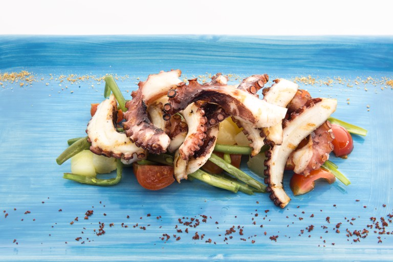

Grilled octupus with green beans and potatoes, flavoured with wild fennel

Description
An eye and taste mesmerizing recipe of octupus that you serve as a starter for your "night show" cooking skills.
Ingredients:
The Octupus
- 200 gr of octupus, tentacles only
- Olive oil
- Salt to taste
Court Bouillon
- 750ml of water
- 10gr of salt
- 1 shallot, chopped
- 1 carrot, chopped
- 1 leek, white part only, chopped
- 1 stick of celery, chopped
- 1 lemon grass stalk
- 1 slice of lemon peel
- 1 bay leaf
- 2 black peppercorns
- 1 tsp coriander
- 1 tsp ginger, sliced
Wild Fennel Oil
- 10gr of wild fennel
- 200ml of olive oil
To Serve
- 100gr of potatoes
- 50gr of green beans
- 20gr of cherry tomatoes
- 5g of anchovy extract
- salt to taste
Steps to make this:
- For the wild fennel oil, blitz the oil and wild fennel in a blender and bring to a temperature of 60°C. Leave to stand overnight.
- Place the octupus in a large saucepan with the court bouillon ingredientes and bring to a simmer. Cook for 30 minutes then leave to cool in the water.
Once cold, cut the tentacles into 5cm pieces.
- Dice the potato into 2cm and cook in boiling salted water until soft, for approximately 10 minutes.
- Top and tail the beans and cook in salted boiling water for 3 minutes. Refresh in iced water.
- Cut the tomatoes into wedges and mix with the beans and potatoes. Season with salt, the infused wild fennel oil and achovy extract.
- Just before serving, grill the octopus tentacles and season with salt and oil. Arrange the salad on the plate and arrange the tentacles on top.